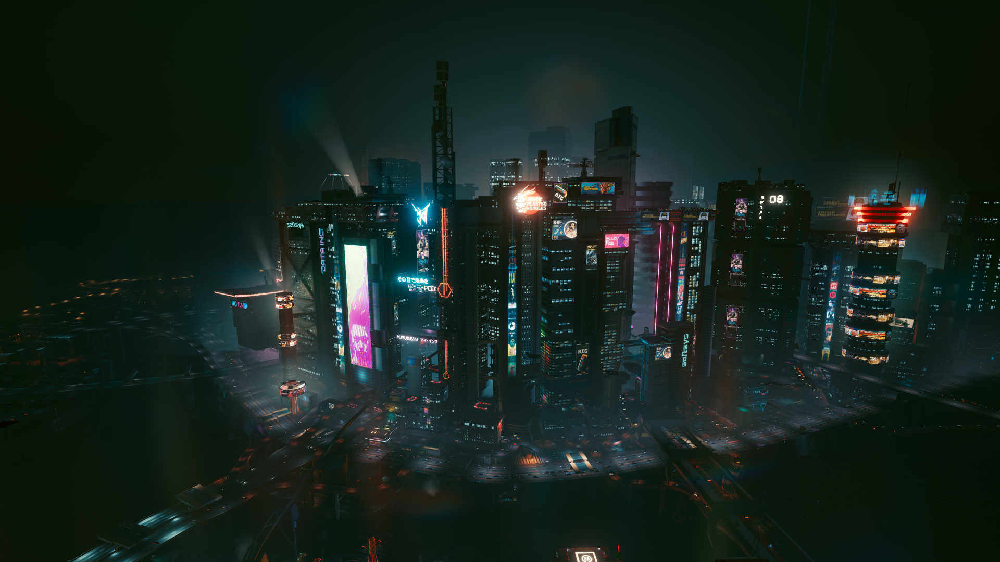

BIENVENIDO A NIGHT CITY
EL PEOR LUGAR PARA VIVIR EN AMÉRICA

Te damos la bienvenida a Night City, una megalópolis hipertecnológica ubicada en el Estado Libre del Norte de California que desafía los límites de la civilización moderna. Aquí, el autodenominado "sueño americano" no se construye con esfuerzo, sino que se compra a plazos con cromo, eurodólares, implantes ilegales y la sangre de quienes caen en el pavimento.
// ARCHIVO OCULTO: Las tasas de mortalidad en los distritos periféricos aumentaron un 23% este trimestre debido a la escasez de suministros médicos genuinos y el tráfico de componentes cibernéticos defectuosos.
// DISTRITOS DESTACADOS

WATSON
Distrito industrial y ex-corazón comercial transformado en un laberinto controlado por bandas y clínicas clandestinas.
EXPLORAR DISTRITO
AFTERLIFE
El santuario definitivo del bajo mundo, construido sobre las cámaras frigoríficas de una antigua morgue. Es el único lugar donde los mejores mercenarios, netrunners y fixers se reúnen para cerrar contratos corporativos multimillonarios de alto riesgo.
EXPLORAR DISTRITO